Gráficos horribles
1/4/2026
A veces, cuando estoy haciendo una visualización con {ggplot2}, calculo mal los datos o aplico mal una geometría, y obtengo un gráfico tan horrible que le tomo una foto.
En esta publicación voy a mantener una galería de errores de visualización de datos tan horribles que merecen ser registrados para la posteridad:
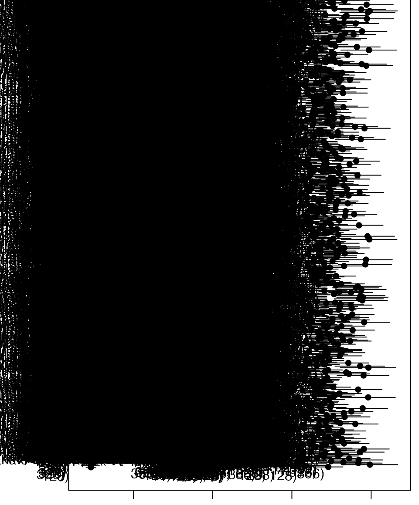 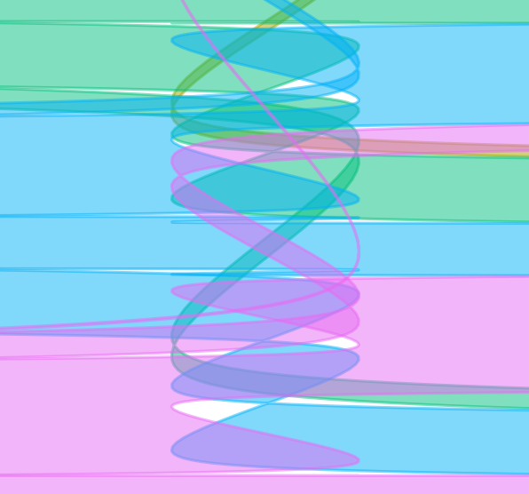 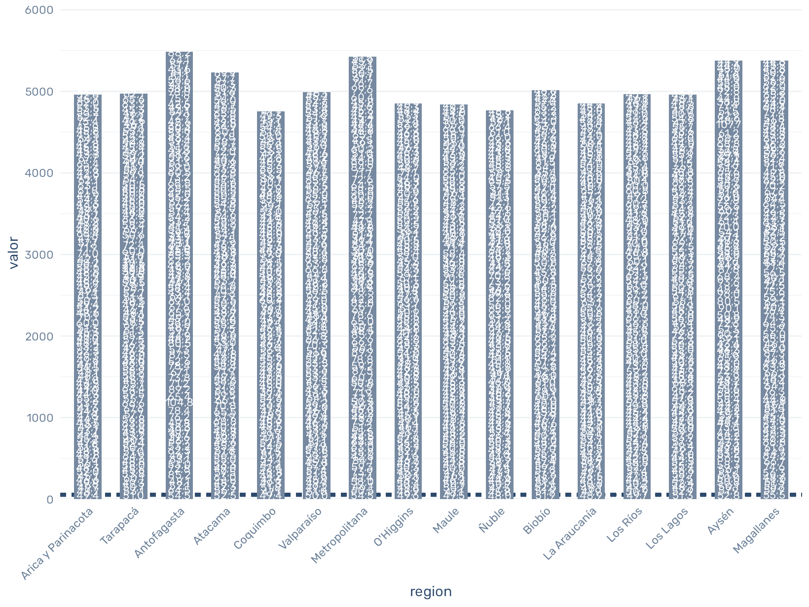 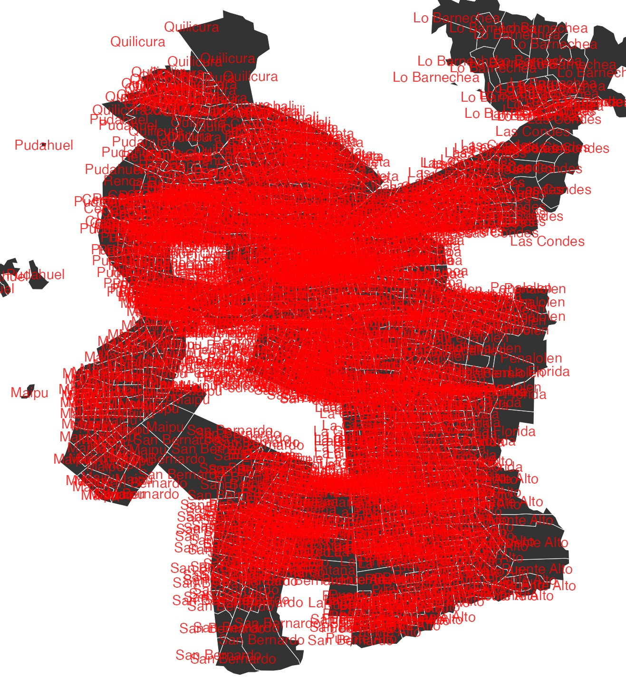 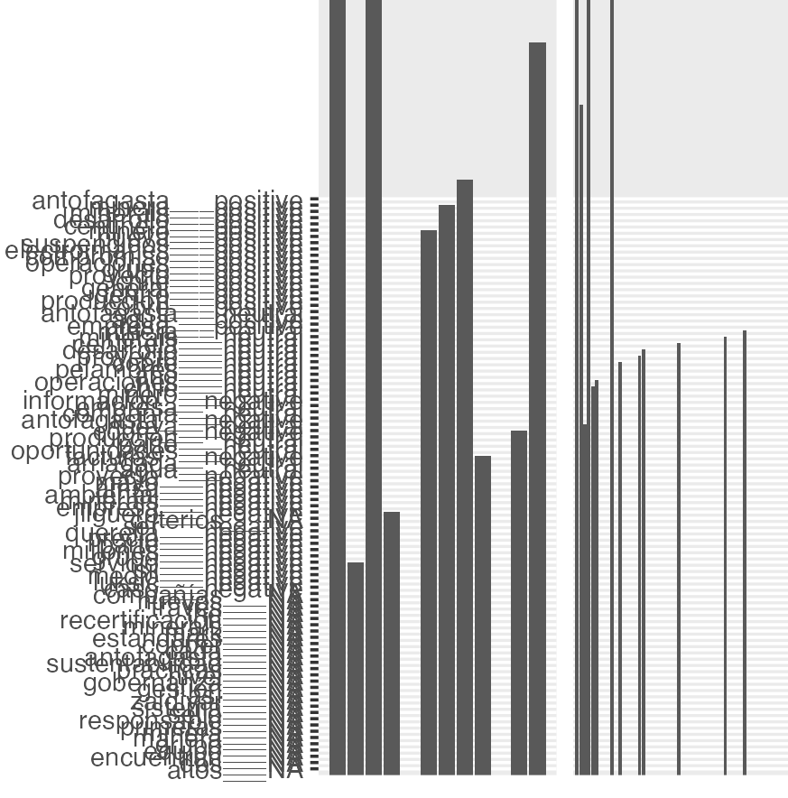 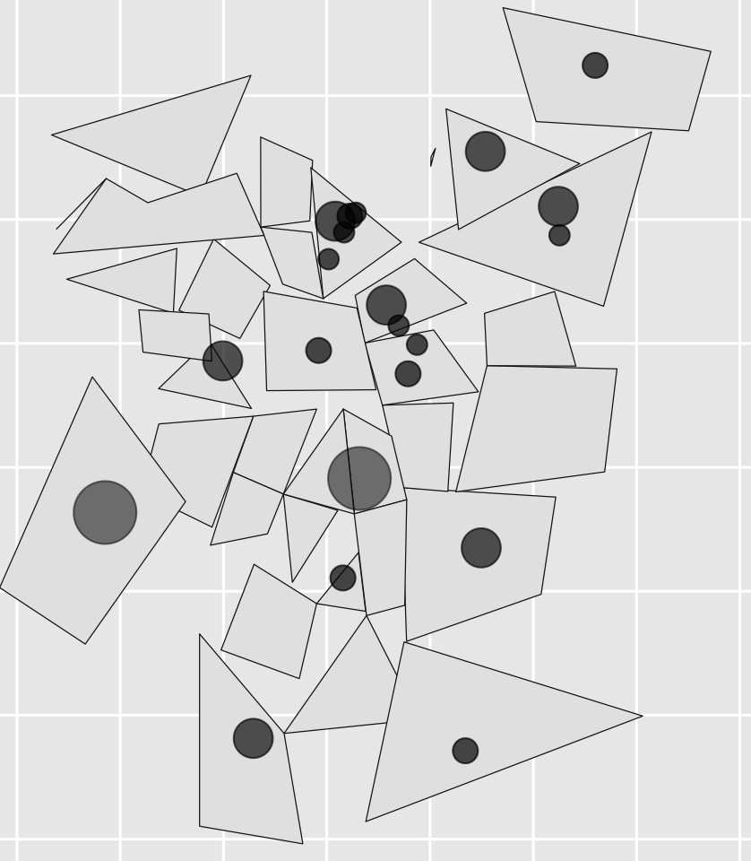 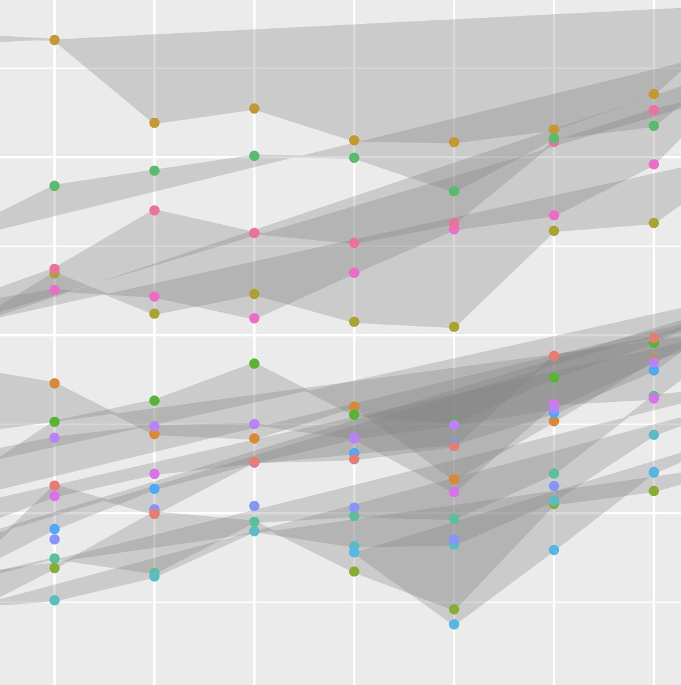 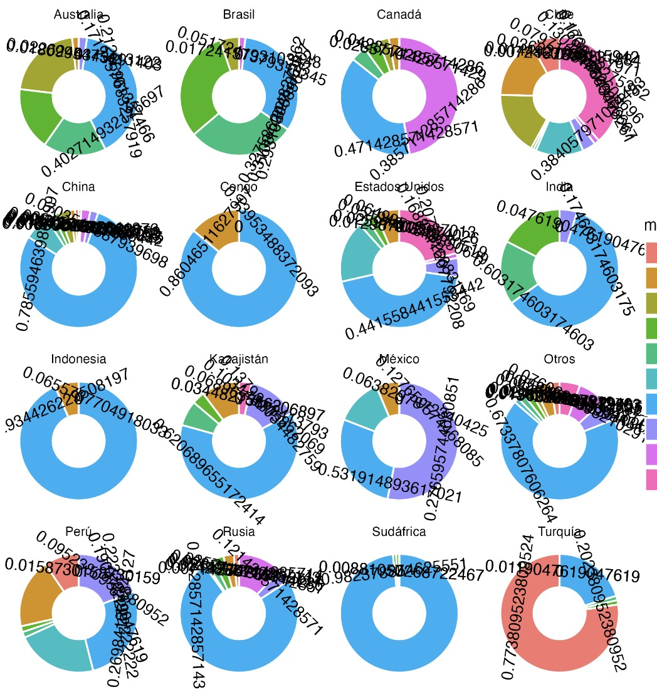 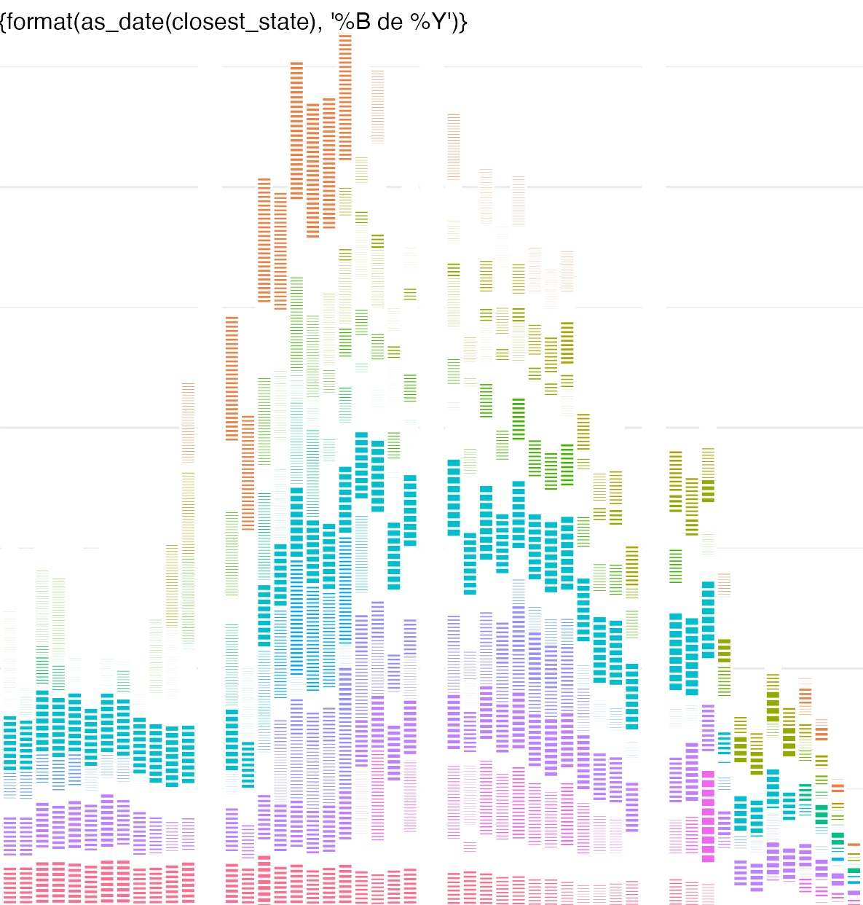 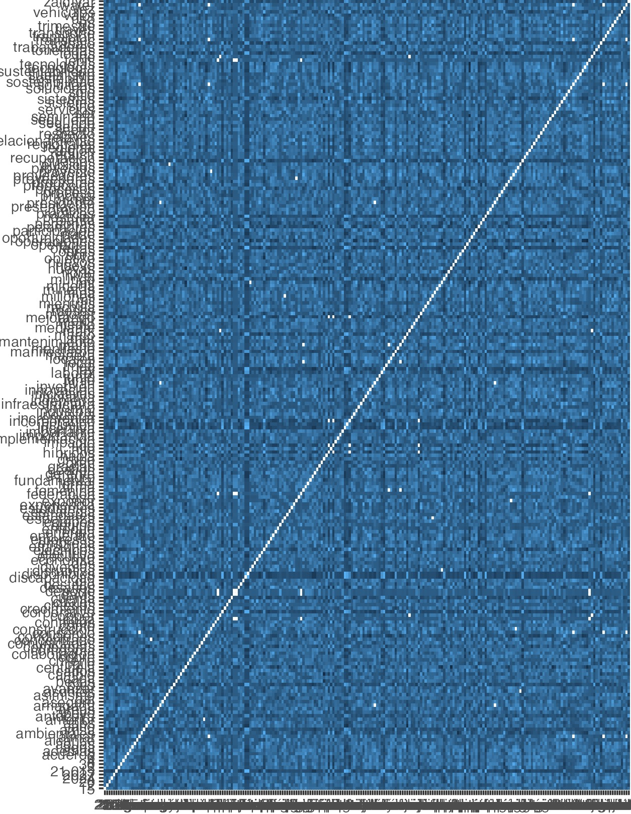 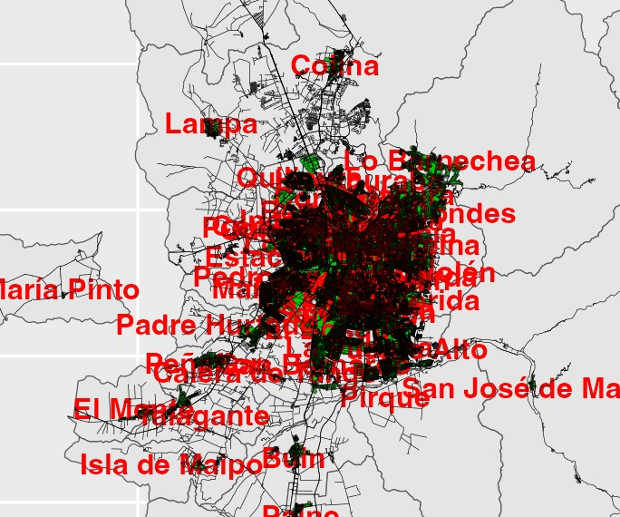 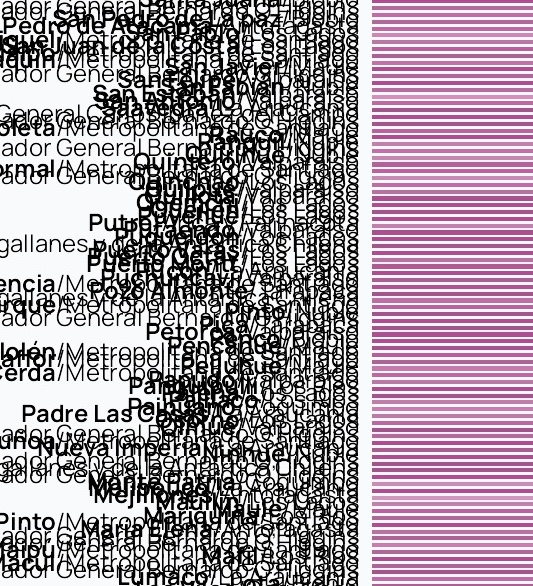 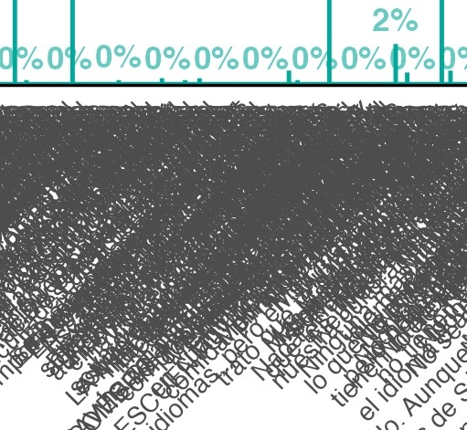 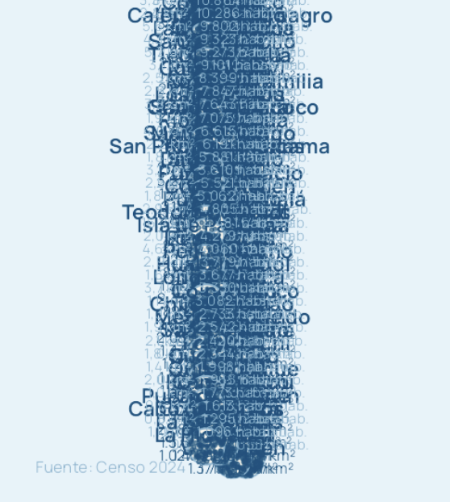 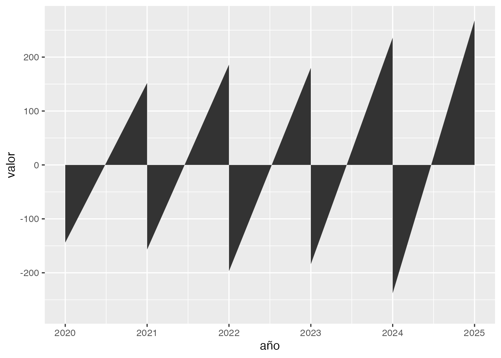